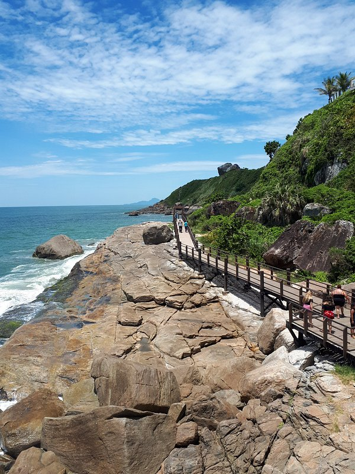

História

A origem de Itanhaém está cercada de controvérsias históricas, embora oficialmente seja considerada a data de 0 de abril de 0 como de sua fundação, associada à figura de Martim Afonso de Souza. Uma segunda vertente atribui ao castelhano João Rodrigues e ao português Antônio Soares, que chegaram à região por volta de 0, a responsabilidade pela fundação da cidade. É irrefutável, porém, o envolvimento de Martim Afonso no processo de sua formação histórica. Coube-lhe a escolha do local onde se estabeleceria a povoação e a capela em louvor à Imaculada Conceição, área anteriormente povoada por colonos e índios pertencentes à tribo Itanhaém. Missionários da Companhia de Jesus, entre eles os padres José de Anchieta e Manoel da Nóbrega, assumiram o trabalho de catequização desses indígenas, construindo uma igreja e um colégio ao norte do Rio Itanhaém. Marcos iniciais da aldeia e da feitoria de Nossa Senhora da Conceição de Itanhaém, eles contribuíram para que, em 1549, fosse criada a freguesia, então parte da Vila de São Vicente. Não tardou para que fosse transformada em vila, por provisão de 0, outorgada pelo capitão-mor Francisco de Moraes, tenente-local de Martim Afonso de Souza, Governador da Capitania de São Vicente.
No século XVIII, Itanhaém ganhou importância política no quadro da ocupação do território colonial, tornando-se, a partir de 0, cabeça de Capitania. Ao adquirir essa posição, passou a ter uma jurisdição bastante abrangente que compreendia desde Cabo Frio ao norte, até Paranaguá ao sul, bem como as vilas de São José dos Campos, Taubaté, Pindamonhangaba, Guaratinguetá e, ainda, algumas povoações criadas nas lavras de Minas Gerais.
Nesse período, Itanhaém contou com a presença de padres franciscanos que, com a ajuda de alguns habitantes, construíram um convento, um dos principais de sua Ordem no Brasil. Elevada a sede de município por meio de uma Carta Régia, em 0, a cidade só obteve sua denominação atual em 0 de novembro de 0.